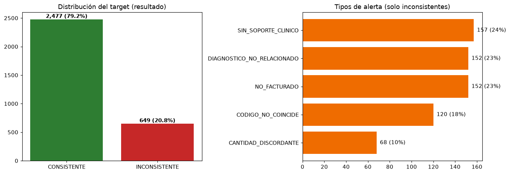
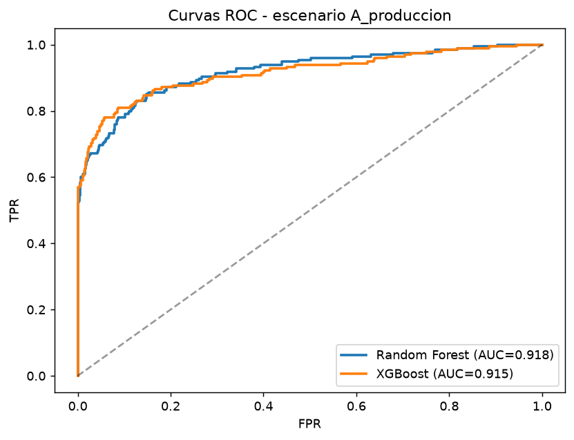
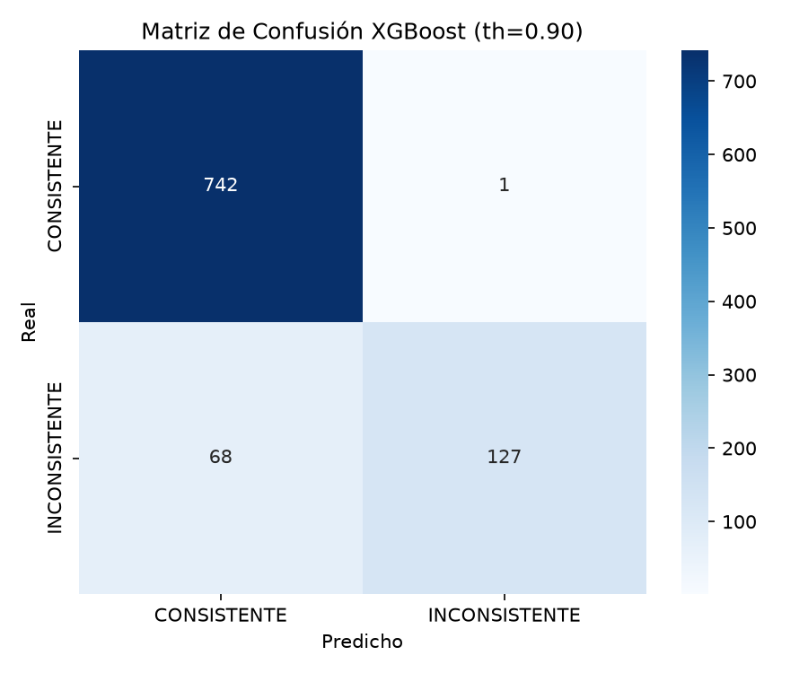

Detecta automáticamente fugas de ingreso, códigos CUPS sin soporte clínico y discrepancias en la Historia Clínica antes de que se conviertan en glosas.
EL PROBLEMA
En las IPS, los servicios realizados no siempre se facturan, los códigos CUPS se transcriben mal y las cantidades no coinciden con la Historia Clínica. Cada inconsistencia se traduce en glosas, devoluciones y fugas de ingreso que erosionan la rentabilidad.
LINE audita cada prefactura automáticamente: cruza los ítems facturados contra la Historia Clínica real, valida la afiliación en la BDUA (ADRES) y prioriza los casos de mayor impacto para el equipo auditor.

RESULTADOS
Métricas consolidadas sobre 3,126 cruces (70/30 estratificado). Fuente: outputs/reports/metrics.json


CÓMO FUNCIONA
Consulta la afiliación del paciente en ADRES y valida la EPS y el régimen del formulario.
Cada ítem facturado se contrasta contra la Historia Clínica: CUPS, cantidades y soporte real.
XGBoost prioriza el riesgo de inconsistencia; Nemotron genera el análisis clínico explicativo.
APROBAR, REVISAR o RECHAZAR con jerarquía clínica y el detalle de cada alerta.
TECNOLOGÍA
EQUIPO
Conoce el sistema completo: flujo de trabajo, documentación técnica y el informe académico del proyecto.
Health & Life IPS SAS · Capstone Sistemas Inteligentes y Computacionales 2025 · Datos sintéticos para fines académicos